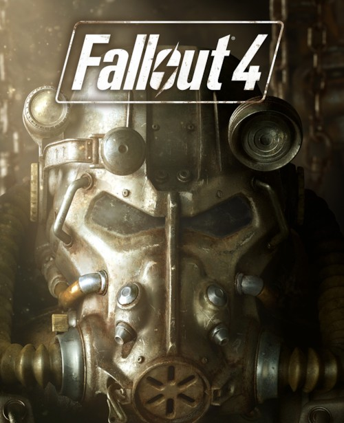

- 폴아웃 시리즈
- 폴아웃 3
- 폴아웃: 뉴 베가스
- HTML 태그정리

개요
2015년 11월 10일에 출시한 오픈월드 뉴클리어 아포칼립스 RPG게임으로, 폴아웃 시리즈의 네번째 게임이다.
폴아웃3으로부터 10년 후,폴아웃: 뉴 베가스로부터 6년 후의 커먼웰스, 즉 미국 동북부의 보스턴을 비롯한 메사추세츠 주 일대를 무대로 하고있다.
스토리
팩션 퀘스트의 비중이 상당히 크고, 자유도가 존재했지만 사실상 도의적으로 선량한 루트를 강제했던 전작(폴아웃3, 뉴베가스)와는 다르게, 주요 세력을 선택할 때 큰 고민을 하지 않아도된다.
이유는 각 세력마다 긍정적인 면과 부정적인 면을 동시에 가지고 있기 때문
하지만 어떤 세력을 선택하든 엔딩 컷신이 같고, 세계관에 영향을 주는게 거의 없다보니 기존의 자유로운 멀티 엔딩을 지향하던 폴아웃 답지 않았다.
이는 엔딩 후 플레이를 더 자연스럽게 하기위한 궁여지책으로 보이는데, 전작에서는 엔딩 후 플레이를 지원하지 않았다.
주인공은 핵전쟁전 커먼웰스의 한 가정의 부부 중 한명을 선택할 수 있다. 주인공은 핵을 피해서 볼트라는 쉘터에 들어가서 냉동수면에 빠지게되고 모종의 이유로 200년이 넘는 시간을 지나 깨어나게 된다.
그와중에 자신의 아들이 사라졌다는 것을 알게되어서 그 아들을 찾아서 떠나는 이야기이다.
참고 사이트
나무위키